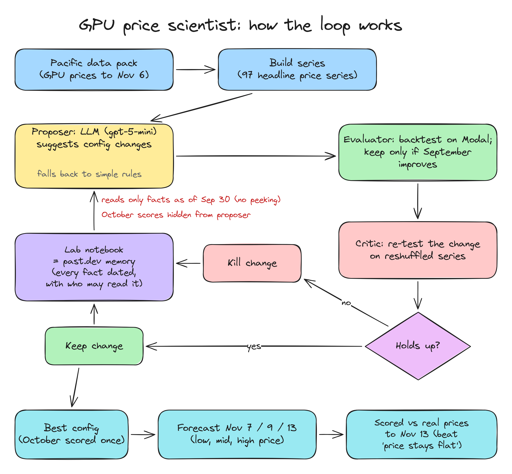
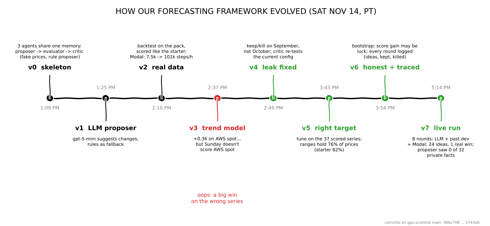
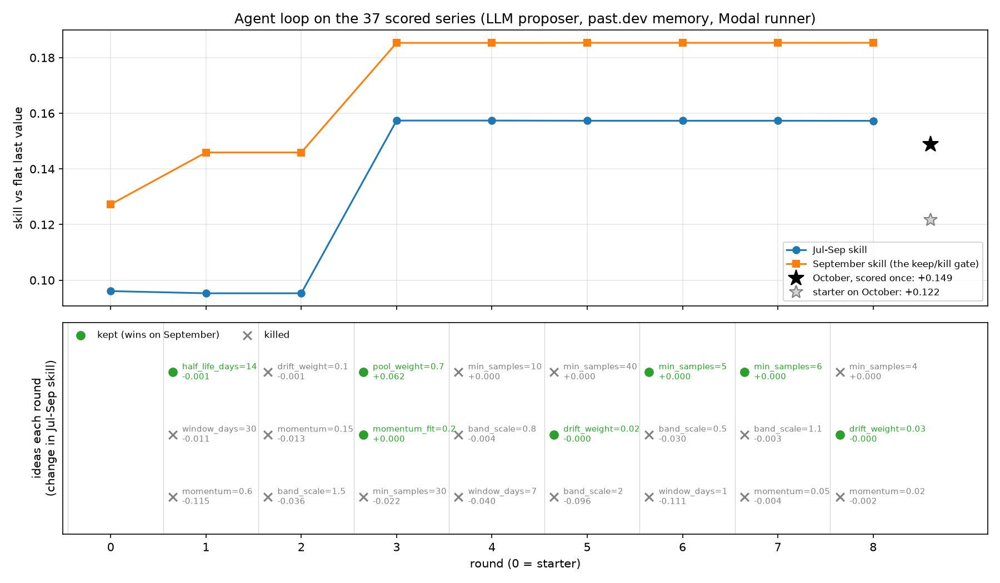

GPU price scientist
A100 40GB spot: $1.69/hr in Oct 2022, $2.09/hr in Oct 2026.
Two questions:

Middle guess = last price. The work is the band around it. Keep a change only if September improves. The proposer sees facts up to September 30; October numbers are critic-only. October is scored once, at the end.

Two mistakes taught us most: a big win on series Sunday doesn't score, and keep/kill on October. Both fixed before the final tuning.

Round chart lands at loop/results/loop_rounds.png'">Sweep of 38 settings, July to September: borrowing repricing behavior from all 725 series raised September skill from +0.127 to +0.162. Doubling the band cut it to +0.041.
Band held the true price
76%
Start: 62%. Target: 80%.
37 series Sunday scores, 1,522 cells.
Skill vs last price
| September | October | |
|---|---|---|
| Start | +0.127 | +0.122 |
| Final | +0.172 | +0.134 |
Gain not significant: +0.0125, 95% interval −0.0097 to +0.0412.
Trend model: +0.36 vs +0.26 on AWS spot, +0.101 vs +0.122 on posted prices.
| November 2028 | Rent, $/hr | Resale | % of launch |
|---|---|---|---|
| H100 SXM | ~3.00 | ~$4,700 | 14% (8–22%) |
| A100 80GB | ~1.50 | ~$1,400 | 9% (7–15%) |
Resale = M × rent × 8,760 hours. M is read from used-price prints and falls about 25% a year with age.
Lease floor at 70% use: about $0.60/hr for an H100, $0.30 for an A100. Details: docs/resale.md.
cd loop && ./demo_read.shThe evaluator writes a verdict. The proposer reads it back, with everything dated up to September 30. The raw server response to the proposer holds no October numbers. The critic sees them.
Thank you.